Coletivo Judaico Universitário
Somos a conexão entre os judeus na universidade e as instituições judaicas - uma rede que conecta, apoia e fortalece.
De um lado, alunos judeus na universidade com demandas, desafios e vivências reais. Do outro, instituições e iniciativas da comunidade judaica. O COJUNI é a ponte entre os dois mundos.
Estudantes universitários com demandas, desafios e vivências reais que precisam de suporte e representação dentro do campus.
Articulação de iniciativas para apoiar estudantes judeus em todas as suas demandas, conectando a comunidade ao ambiente acadêmico.
Atuação direta dentro do campus universitário, responsável pelo reconhecimento e encaminhamento das demandas internas de cada faculdade.
Contato direto com as instituições parceiras na construção de soluções comuns, adaptadas pelos Comitês de Campus para cada universidade.
Acompanhe o COJUNI nas redes sociais e conecte-se à comunidade judaica universitária brasileira.